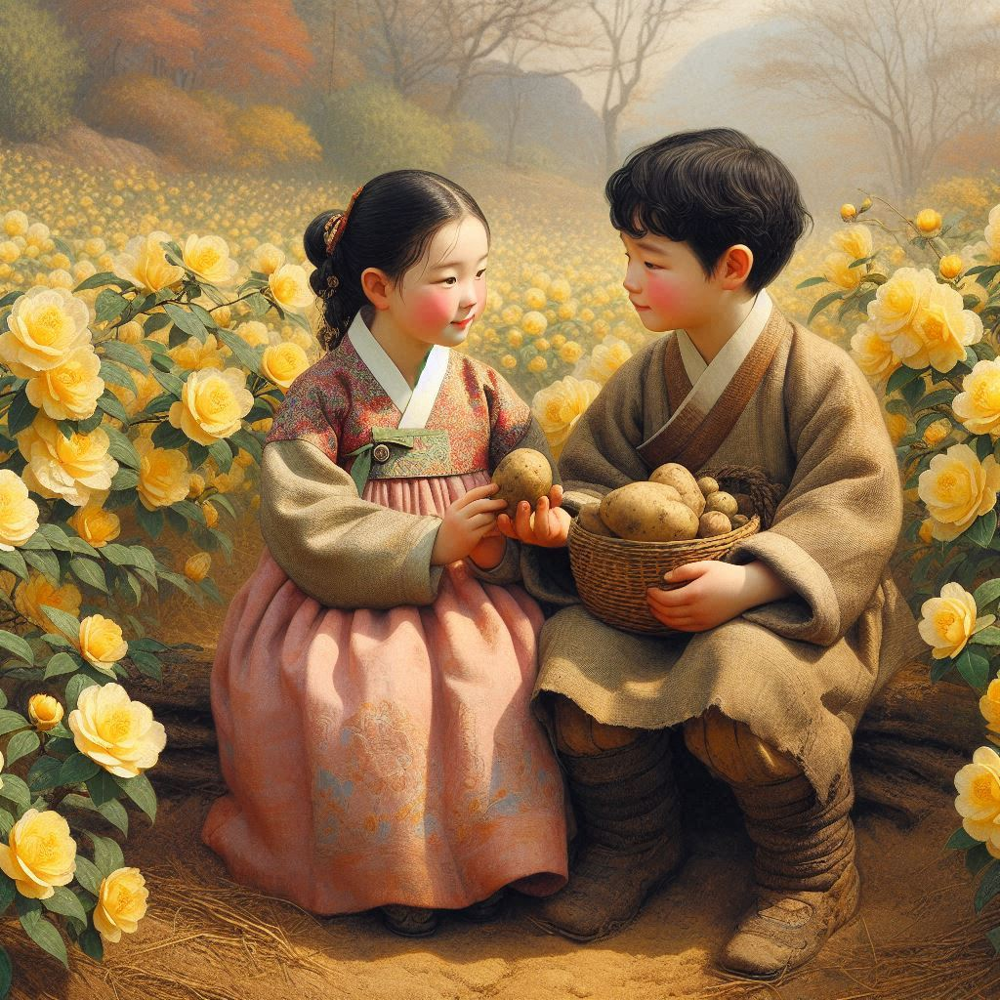

작가
김유정
출판일
1936년
감상평에 대한 AI그림
📖 "『동백꽃』은 순박한 시골 소년과 소녀의 풋풋한 첫사랑을 유쾌하게 그린 단편 소설이다.
투박한 사투리와 해학적인 표현이 돋보이며, 감정 표현이 서툰 주인공들의 관계가 정겹고도 귀엽다.
시골 풍경과 순수한 정서를 담아내면서도, 계층 간 갈등과 농촌 사회의 현실이 은근히 드러난다.
짧지만 인상 깊은 작품으로, 김유정 특유의 해학과 따뜻한 감성이 느껴진다."

감상평에 대한 AI평가
🌟 강점:
작품의 핵심 요소(첫사랑, 해학적 표현, 농촌 배경)를 잘 설명함.
감정 표현이 서툰 주인공들의 관계를 귀엽고 따뜻하게 묘사함.
김유정의 문체적 특징과 작품의 사회적 의미를 간략히 언급함.
🔍 보완점:
소년과 소녀의 대표적인 장면(예: 동백꽃 사건)을 구체적으로 설명하면 더 생동감 있을 것.
김유정의 다른 작품과 비교하여 문체적 특징을 강조하면 더 깊이 있는 감상평이 될 수 있음.